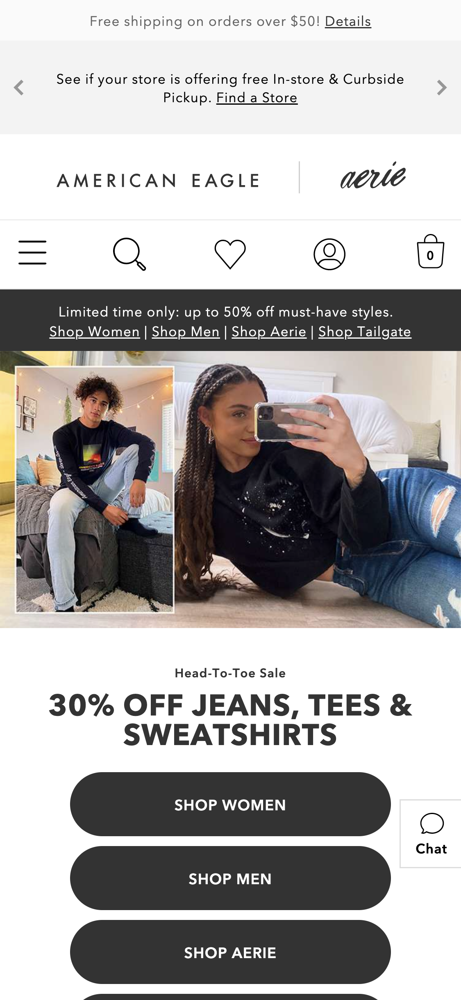

Proximity
Madewell.com.png)
I think that the Madewell site has a very clean and crisp look to it. On this site we see that the 20% off coupons are in close proximity to eachother, but not too close as to avoid over crowding. The proximity of these elements unify the page while reducing clutter and conveying the main message. These ads are also in close proximity of the account login icon as well as the cart icon as to further push the reader to sign in or to sign up.
White Space and Clean Design
American Eagle (ae.com) I have always loved the aesthetic of American Eagles' page. It is not too overwhelming to the eye, and although their model photos take up the full width of the page, there is a beautiful amount of padding in between each image. I also think that there is a great amount of space in between the lines of the text, this way I dont feel like the words are almost bleeding together. All of these features work together hand in hand as to utilize the white space to create a clean, unified and crisp look while avoiding being over crowded.
Contrast
Target.com.png)
Both the target app and the website overwhelm me just a tad bit as they do not really leave any whitespace on their site. In other words, there is just a lot going on! However, I will give props to the developers of this site, as I think they did a fantastic job incorporating enough contrast in between items so everything does not just bleed together. Through contrast, we see a clear distinction between different sale ads that are at the focus of their site.